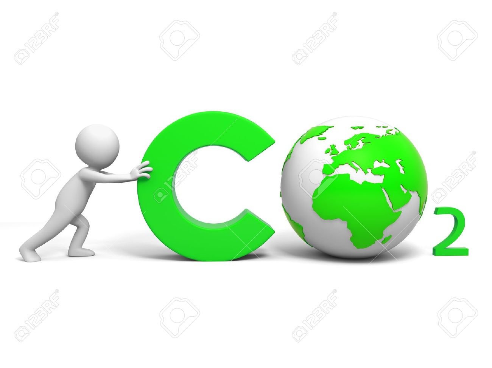
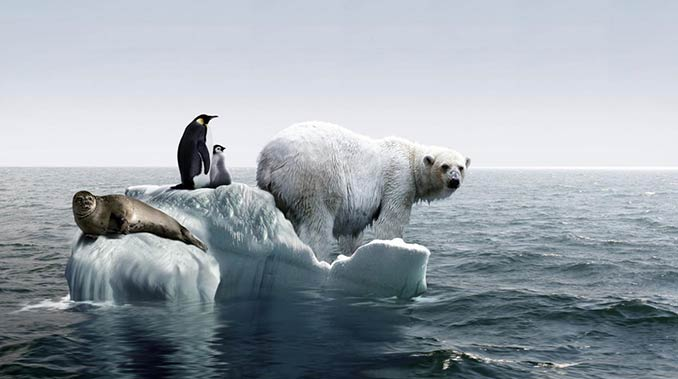

Global warming
What is the global warming?
Here's a simple definition of global warming.
(And yes, it's really happening.)Over the past 50 years,
the average global temperature has increased at the fastest rate in recorded history.
And experts see the trend is accelerating: All but one of the 16 hottest years in NASA’s 134-year record have occurred since 2000.
Climate change deniers have argued that there has been a “pause” or a “slowdown” in rising global temperatures,
but several recent studies,including a 2015 paper published in the journal Science, have disproved this claim.
And scientists say that unless we curb global-warming emissions,
average U.S. temperatures could increase by up to 10 degrees Fahrenheit over the next century.
What causes global warming?

Global warming occurs when carbon dioxide (CO2) and other air pollutants and greenhouse gases collect in the atmosphere and absorb sunlight and
solar radiation that have bounced off the earth’s surface. Normally, this radiation would escape into space—but these pollutants,
which can last for years to centuries in the atmosphere, trap the heat and cause the planet to get hotter.
In the United States, the burning of fossil fuels to make electricity is the largest source of heat-trapping pollution,
producing about two billion tons of CO2 every year. Coal-burning power plants are by far the biggest polluters.
The country’s second-largest source of carbon pollution is the transportation sector, which generates about 1.7 billion tons of CO2 emissions a year.
what are the effects of global warming?
Each year, scientists learn more about the consequences of global warming, and many agree that environmental, economic,
and health consequences are likely to occur if current trends continue.
Here’s just a smattering of what we can look forward to:

Melting glaciers, early snowmelt, and severe droughts will cause more dramatic water shortages and
increase the risk of wildfires in the American West.
Rising sea levels will lead to coastal flooding on the Eastern Seaboard,
especially in Florida, and in other areas such as the Gulf of Mexico.
Forests, farms, and cities will face troublesome new pests, heat waves, heavy downpours,
and increased flooding. All those factors will damage or destroy agriculture and fisheries.
Disruption of habitats such as coral reefs and Alpine meadows could drive many plant and animal species to extinction.
Allergies, asthma, and infectious disease outbreaks will become more common due to increased growth of pollen-producing ragweed,
higher levels of air pollution, and the spread of conditions favorable to pathogens and mosquitoes.